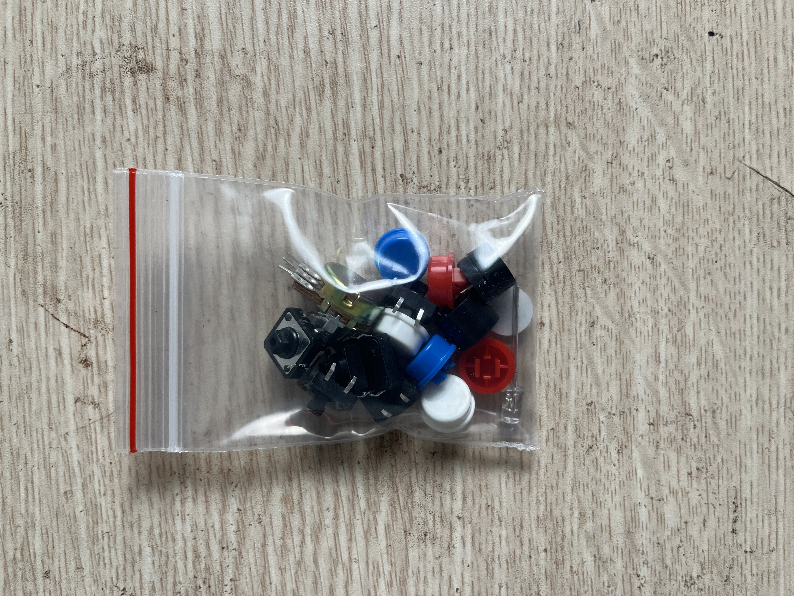
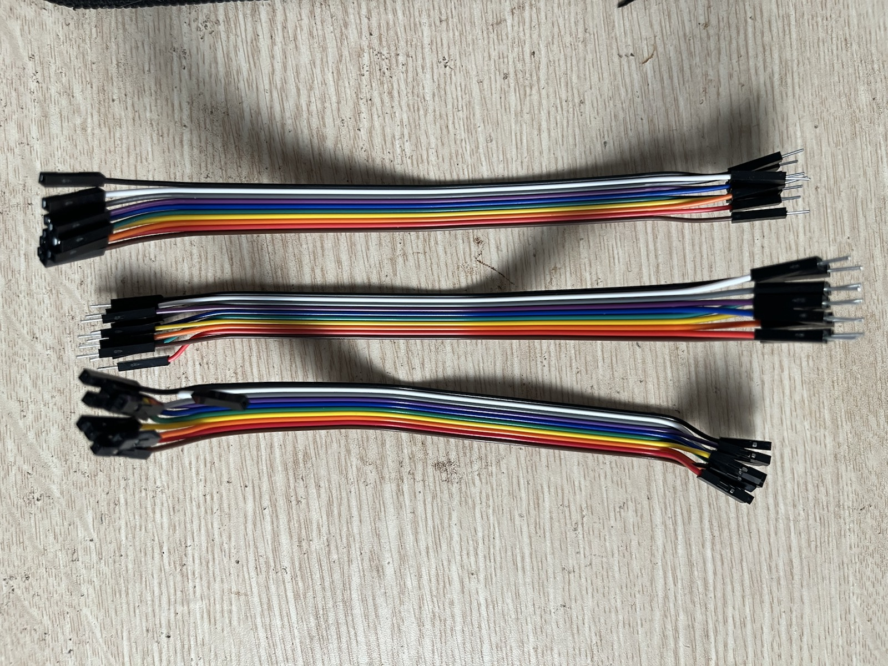
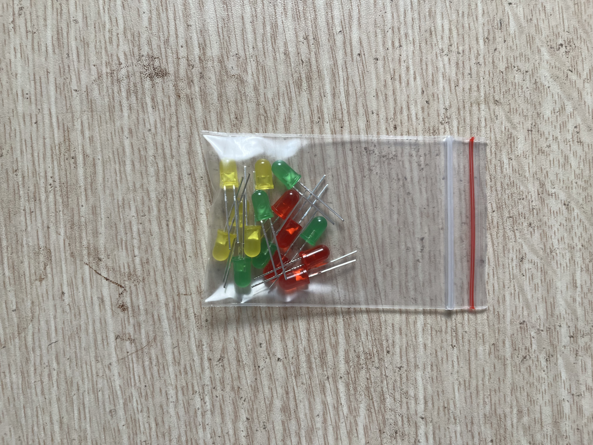
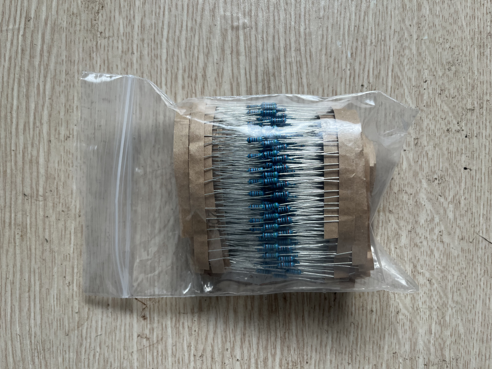

P5 Biến trở -> LED
Xoay biến trở 10K để ESP32 đọc ADC, rồi map giá trị đó sang PWM điều chỉnh độ sáng LED.
An toàn
Hai đầu biến trở nối 3V3 và GND, chân giữa nối ADC. Không đưa 5V vào ADC của ESP32.
Ảnh linh kiện






Nối dây gợi ý
| Linh kiện | Nối tới | Ghi chú |
|---|---|---|
| Biến trở đầu 1 | 3V3 | Jumper Đực–Cái. |
| Biến trở đầu 2 | GND | Jumper Đực–Cái. |
| Biến trở chân giữa | D34 (GPIO 34) | ADC input-only. |
| LED | D2 → 220Ω → LED → GND | PWM; giữ mạch P2. |
Các bước làm
- Đọc ADC từ GPIO 34 và in ra Serial Monitor.
- Map giá trị ADC sang duty PWM.
- Xoay biến trở để LED sáng/tối theo tay.
- Thử đảo chiều 3V3/GND của biến trở nếu hướng xoay bị ngược ý.
Hoàn thành khi
- LED thay đổi độ sáng mượt theo biến trở.
- Bạn phân biệt được ADC input và PWM output.